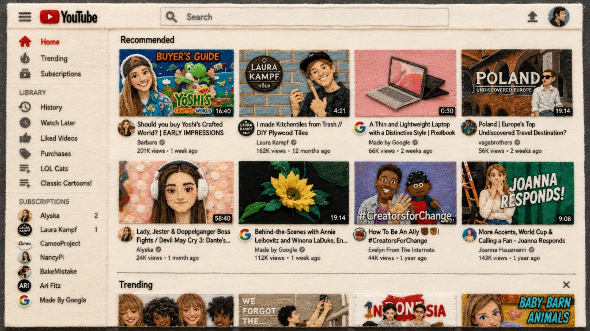
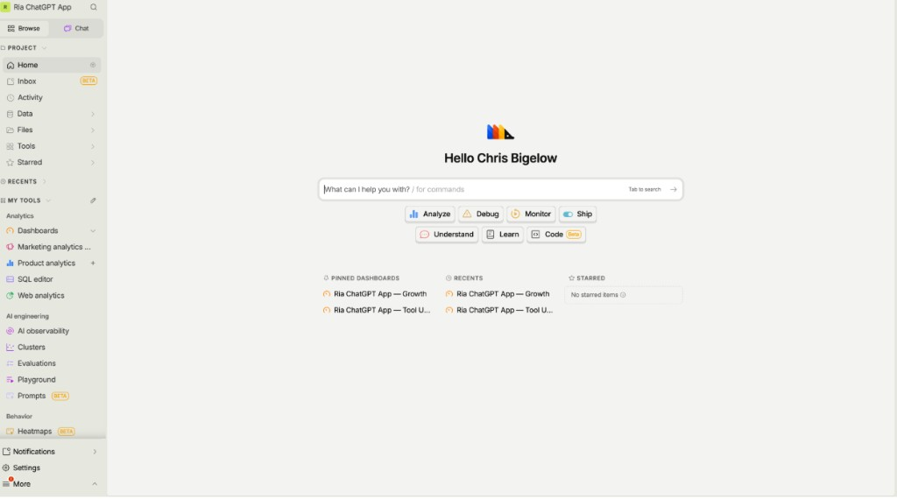

In the early 2010s, serious software was native software. Programs like Adobe Photoshop ran directly on your computer, where they had access to its memory, processors, graphics hardware, and native graphics APIs. Browser applications were easier to open and share, but they could not render complex graphics.
Then WebGL arrived in 2011, giving browser applications a standard way to use hardware-accelerated graphics. Suddenly the performance gap was small enough that the browser's other advantages began to tip the scales. A browser application required no installation and worked across operating systems. A design could be shared by simply sending someone a link.
Dylan Field and Evan Wallace saw this opportunity early. They spent years building a design application around WebGL, even when it was not clear that browsers were capable of supporting one. Figma's rendering engine bypassed much of the normal HTML rendering pipeline and worked directly with the graphics card. A designer could place an entire app on one large canvas. A developer could inspect it without installing special software. A product manager could leave comments in the actual file. Eventually, several people could work together in real time. The design stopped being an artifact passed between people and became a place where the team worked.
Figma now has an extraordinary lead in interface design. The UX Tools Design Tools Survey reports that 82.3% of its respondents use Figma as their primary interface-design tool.
WebGL turned the browser into a place where almost any kind of software could run. Generative AI will turn software into something that forms around us.
Traditional user interfaces are relatively static. Designers think about what users want to do and how they will think to do it. They decide what screens, menus, forms, and dashboards exist ahead of time. The interface is fixed, and the user has to learn how to work within it, requiring time and energy to learn a specific tool. This is why UX standards exist: to lower the time it takes for a new user to learn your tool, provided they already have experience with similar ones.
With a Generative Interface, the screen UI is no longer designed in advance. Interfaces will be assembled at the moment they are needed, shaped by the user, the task, and the available context. Ask for this week's product analytics, and the system might create a live chart with the relevant data and controls. Instead of learning how the software works, the software learns what the user needs and generates it on the fly using LLMs to dynamically build from a component library.
PostHog is moving in this direction. Rather than requiring users to navigate through dashboards, reports, and configuration screens, PostHog AI lets them ask questions in plain English, query their product data, and generate insights and visualizations through a conversational interface.

Google has released A2UI, an open protocol that allows agents to describe interactive interfaces using a declarative format. The application then renders those interfaces using its own native component library rather than executing arbitrary AI-generated code.
Google has also announced Generative Interfaces and "mini apps" inside Search. Instead of merely returning a page of links, Search will be able to create interactive tables, graphs, simulations, and purpose-built tools in response to a query. See Introducing Generative UI in Google Search.
What this means for apps and websites
Will apps go away and iOS/Android renders everything the user needs at the moment they need it? Or will traditional apps and websites remain and they simply all adopt generative UI where appropriate?
I'm not sure what the end state looks like. But in the near term, I expect usage of some application interfaces to collapse as ChatGPT, Claude, Gemini, and other AI systems get better at generating software on the fly.
Stripe recently released Stripe Projects through projects.dev, which allows AI agents to use Stripe, Vercel, Supabase, Chroma, and PlanetScale and more without a developer ever seeing a UI.
I haven't opened an analytics tool or a bug tracker in months. I connect Claude to them and let it analyze the data. I don't search Wikipedia or X myself anymore either. I ask LLMs like Grok to do it for me.
The companies behind those applications may still provide the data, infrastructure, transactions, or services. But the customer relationship is already moving toward the agent that controls the interface.
The moats that matter in an AI-first world
For the mid-sized internet company, the most valuable moats will increasingly fall into three categories:[1]
- Proprietary data, content, and networks
Examples: TikTok, YouTube, DoorDash, Airbnb, Uber, and Tinder. - Regulatory and Operational complexity
Examples: Stripe, Mercury, Revolut, Coinbase - Deep technical infrastructure
Examples: Vercel, Supabase, Cloudflare
If your moat is data, protect it. Data can be scraped, copied, or poisoned by generative AI. We are already seeing platforms flooded with synthetic content (look at your grandma's facebook), which can slowly degrade the value of the underlying network.
If your moat is operating in a highly regulated or technically difficult market, you have to increase your pace of innovation to compete with the increased intelligence capabilities startups will have access to. For example, nimble startup Harvey AI is taking on Thomson Reuters (a $60B+ giant behind Westlaw) and LexisNexis. Using LLMs, it automates complex document review, contract analysis, regulatory research, etc. Employees at these firms call it "magic" and I'm skeptical the incumbents will ever be able to catch up.
We went from downloading applications, to using nearly all of them in the browser, and now we access many of them solely through an AI agent or a generated interface. Companies will increasingly compete not only for human users, but to become the infrastructure those agents select. Your underlying rails have to be the best in the world because when an agent or Generative Interface decides which API, MCP server, or infrastructure provider to use, it won't care how good your marketing team is or if Matt Damon endorsed your app from space.